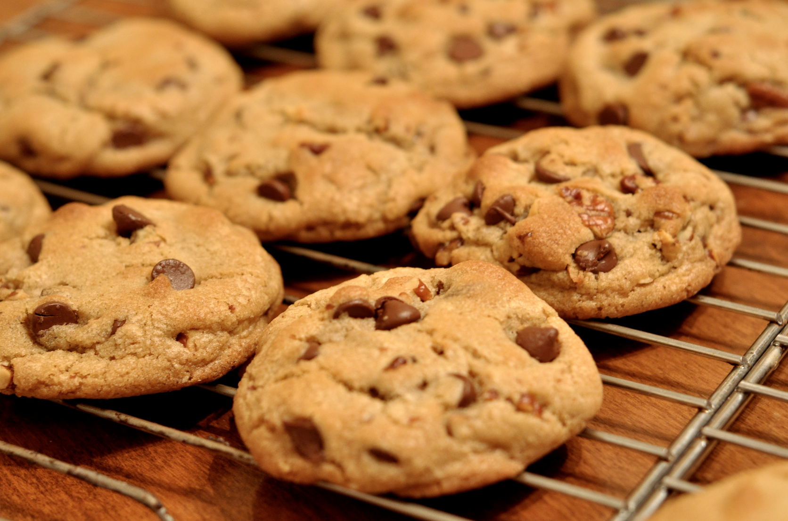

Chocolate Chip Cookie Recipe
Prep Time | Total Time
45 Minutes | 55 Minutes
Serving Size
Depends on how many cookies you can eat, so maybe only 1 serving.
Ingredients
- 1 1/2 cup (3 sticks) butter, softened
- 1 cup brown sugar
- 1 cup granulated sugar
- 1 tbl vanilla insert pudding powder
- 2 tbl milk
- 2 tbl vanilla extract
- 2 eggs
- 4 cups all purpose flour
- 2 tsp baking soda
- 1/2 tsp salt
- 4 cups chocolate chips
- 1 cup chopped walnuts or pecans (optional)
Directions
- Preheat oven to 350 degrees
- Beat butter and sugars together until light and fluffy
- Stir in pudding mix milk and vanilla extract
- Beat in eggs
- Add dry ingredients and stir until combined
- Stir in chocolate chips and nuts
- Place 1 1/2 balls of dough 2 inches apart on an ungreased cookie sheet
- Bake 8-10 minutes or until golden brown
Suggested Serving
With milk and friends!
Related Recipes
- Amazing Chocolate Chip Cookies!
- Beer and Pretzel Chocolate Chip Cookies
- Bisquick Chcocolate Chip Cookies
- Browned Butter and Chcoolate Chip Cookies
- Buttery Chocolate Chip Cookies
- Cherry Chocolate Chip Cookies
Other Information
For more information, please visit the Global Cookie Website.
For information about the author, feel free to follow him on Twitter.